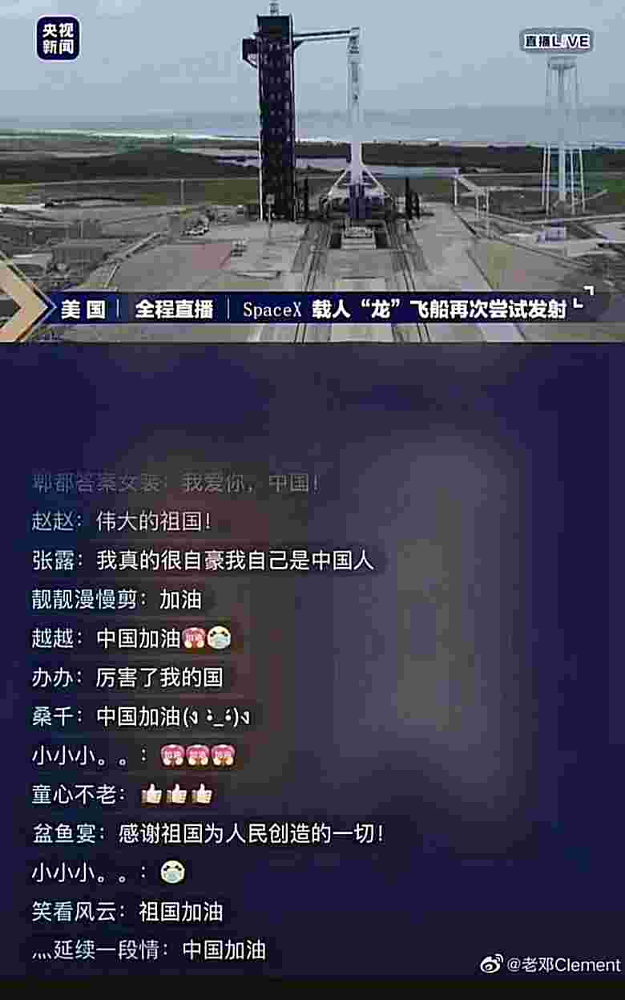

更多其他文章
株洲市委监委违法线索征集
公众正义感不该被亵渎
人物
历史
中国通史 七选举
三代以前
选举制度，在三代以前，是与世袭并行的。俞正燮《癸巳类稿》，有一篇《乡兴贤能论》，说得最好，他说：古代的选举，是限于士以下的，大夫以上是世官。这是什么理由呢？第四章已经说过：元始的政治，总是民主的，到后来，政治才渐渐兴起，如其一个国家是以征服之族和被征服之族组成的，高级的位置自然不容被征服之族染指。即使原是一族，而政治既兴，掌握政权的人，也就渐渐的和群众离开了。所以选举仅限于士以下。
士以下的选举乃系古代部族，政治尚未兴起时的制度，留遗下来的。
政体兴起后，只是把一个强有力的组织，加于其上，而于此等团体固有的组织，并未加以破坏，所以其首领还是出于公举的，不过的政府，也要加以相当的参预干涉罢了。
正途
清制以科目、贡监、荫生为正途，荐举、捐纳、吏员为异途，异途之受歧视亦殊甚。然及末造，捐纳大行，仕途拥挤，亦虽欲歧视而不可得了。
卖官 …
更多取消各类职称评审，弱化院士社会影响力
全国政协委员许洪玲
方方没有利用你的文章打压攻击谁


Page 1 / 2 »